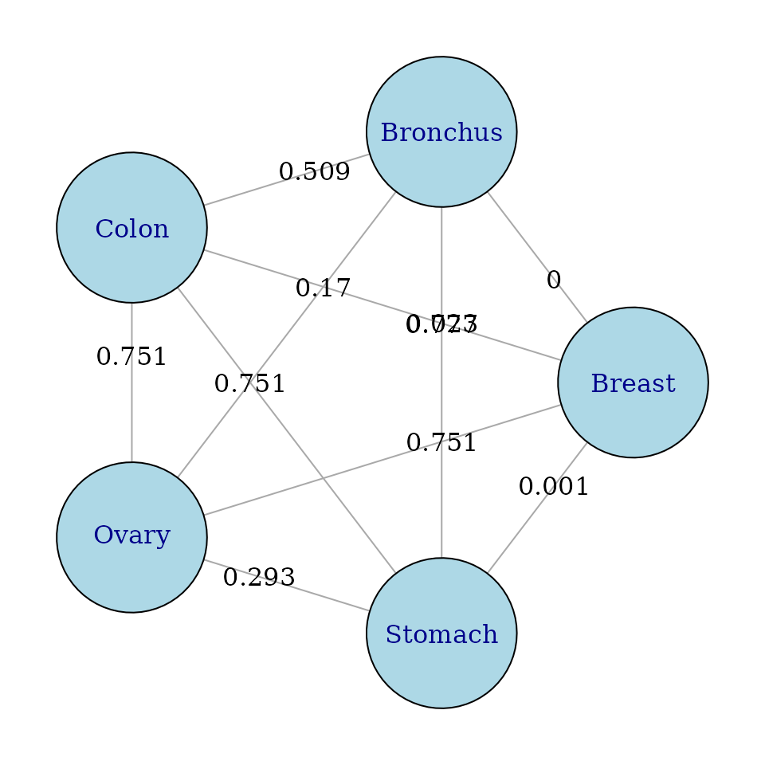
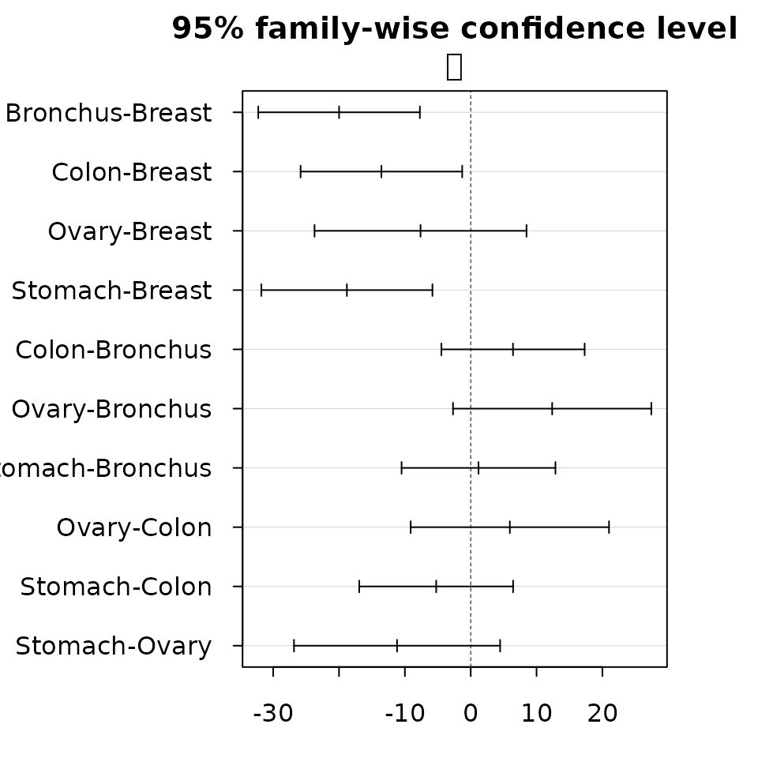

Multiple comparisons with PairViz
Catherine B. Hurley and R.W. Oldford
2022-01-11
MultipleComparisons.RmdPairViz is an R package which provides orderings of objects for visualisation purposes. This vignette demonstrates the use of PairViz for comparing distributions. We recommend that you check out the material in the accompanying vignette ‘Introduction to PairViz’ prior to this.
Cancer treatment groups
Patients with advanced cancers of the stomach, bronchus, colon, ovary or breast were treated with ascorbate. Interest lies in understanding whether patient survival time (in days, it seems) is different depending on the organ affected by cancer.
suppressPackageStartupMessages(library(PairViz))
data(cancer) # Need this step to load the data
str(cancer) # Summary of structure of the data
#> 'data.frame': 64 obs. of 2 variables:
#> $ Survival: int 124 42 25 45 412 51 1112 46 103 876 ...
#> $ Organ : Factor w/ 5 levels "Breast","Bronchus",..: 5 5 5 5 5 5 5 5 5 5 ...
# We can separate the survival times by which organ is affected
organs <- with(cancer, split(Survival, Organ))
# And record their names for use later!
organNames <- names(organs)
# the structure of the organs data
str(organs)
#> List of 5
#> $ Breast : int [1:11] 1235 24 1581 1166 40 727 3808 791 1804 3460 ...
#> $ Bronchus: int [1:17] 81 461 20 450 246 166 63 64 155 859 ...
#> $ Colon : int [1:17] 248 377 189 1843 180 537 519 455 406 365 ...
#> $ Ovary : int [1:6] 1234 89 201 356 2970 456
#> $ Stomach : int [1:13] 124 42 25 45 412 51 1112 46 103 876 ...Boxplots of the cancer survival times are:
library(colorspace)
cols <- rainbow_hcl(5, c = 50) # choose chromaticity of 50 to dull colours
boxplot(organs, col=cols,
ylab="Survival time",
main="Cancer treated by vitamin C")Taking square roots should make the data look a little less asymmetric.
Layout via graph structure
Suppose we would like to compare every organ type with every other. To find an order, we need to find an Eulerian for a complete graph of \(k=5\) nodes.
This can be found with the PairViz function eulerian() as follows:
ord <- eulerian(5)
ord
#> [1] 1 2 3 1 4 2 5 3 4 5 1We can use the constructed ord vectors to form boxplots:
boxplot(sqrtOrgans[ord], col=cols[ord],
ylab=expression(sqrt("Survival time")),
main="Cancer treated by vitamin C", cex.axis=.6)Every pair of comparisons appear adjacently to one another. We have also taken care to assign each cancer type the same colour across all the boxplots. Note that this Eulerian order does not show all organs (colours) in the first five boxplots. That is, it is not one Hamiltonian followed by another. If a Hamiltonian is required, then replace ord in the plot above with
ordHam <- hpaths(5, matrix = FALSE)
ordHam
#> [1] 1 2 3 5 4 1 3 4 2 5 1Pairwise tests
We could, for example, run some statistical test comparing each pair and then use the observed significance level for that test.
Suppose we test the equality of each pairwise means (assuming normal distributions of course). A function in R that accomplishes this (and which corrects the p-values for simultaneity, though this doesn’t matter for our purpose of simply ordering) is pairwise.t.test.
# Get the test results
test <- with(cancer,
pairwise.t.test(sqrt(Survival), Organ))
pvals <- test$p.value
pvals
#> Breast Bronchus Colon Ovary
#> Bronchus 0.000242 NA NA NA
#> Colon 0.023008 0.5087 NA NA
#> Ovary 0.751431 0.1703 0.7514 NA
#> Stomach 0.001261 0.7766 0.7514 0.2934From this we can see that in testing the hypothesis that the mean \(\sqrt{Survival}\) is identical for those with colon cancer and those with breast cancer, the observed significance level (or “p-value”) is about 0.023. This low value indicates evidence against the hypothesis that the means are identical.
Note the shape of the output (compare row names to column names). This will require a little work to put it into a more useful form. Our goal here is to construct a symmetric matrix where each entry is a p-value comparing two groups.
# First construct a vector, removing NAs.
weights <- pvals[!is.na(pvals)]
weights <-edge2dist(weights)edge2dist is a utility function in PairViz that converts the values in the input vector into a dist. A matrix with labelled rows and columns is more useful to us:
weights <- as.matrix(weights)
rownames(weights) <- organNames
colnames(weights)<- rownames(weights)
weights
#> Breast Bronchus Colon Ovary Stomach
#> Breast 0.000000 0.000242 0.02301 0.7514 0.001261
#> Bronchus 0.000242 0.000000 0.50872 0.1703 0.776598
#> Colon 0.023008 0.508725 0.00000 0.7514 0.751431
#> Ovary 0.751431 0.170253 0.75143 0.0000 0.293361
#> Stomach 0.001261 0.776598 0.75143 0.2934 0.000000Check that the weight values correctly correspond to p-values. Imagine the graph, with the boxplots (or organs) as nodes, and edges being the comparisons. We could assign weights to the edges of the graph that were identical to the significance levels.
(Aside) Construction and display of the graph
Here is the graph:
g <- mk_complete_graph(weights)To plot the graph in igraph use
requireNamespace("igraph")
#> Loading required namespace: igraph
igplot <- function(g,weights=FALSE,layout=igraph::layout_in_circle,
vertex.size=60, vertex.color="lightblue",...){
g <- igraph::graph_from_graphnel(as(g, "graphNEL"))
op <- par(mar=c(1,1,1,1))
if (weights){
ew <- round(igraph::get.edge.attribute(g,"weight"),3)
igraph::plot.igraph(g,layout=layout,edge.label=ew,vertex.size=vertex.size,vertex.color=vertex.color,...)
}
else
igraph::plot.igraph(g,layout=layout,vertex.size=vertex.size,vertex.color=vertex.color,...)
par(op)
}
igplot(g,weights=TRUE,edge.label.color="black")
To plot the graph in Rgraphviz use:
Visiting edges and nodes
We might then ask whether we could have a path that
- visited all edges but preferred to visit low-weight (or high weight) edges soonest (a greedy Eulerian)
- this is particularly useful if not all edges can be visited (for whatever reason)
- visited every node but had the least (or most) total weight
This greedy Eulerian visits all edges, arranging the path so low weight edges are encountered early.
low2highEulord <- eulerian(weights); colnames(weights)[low2highEulord]
#> [1] "Bronchus" "Breast" "Stomach" "Ovary" "Bronchus" "Colon"
#> [7] "Breast" "Ovary" "Colon" "Stomach" "Bronchus"
## or equivalently
eulerian(g)
#> [1] "Bronchus" "Breast" "Stomach" "Ovary" "Bronchus" "Colon"
#> [7] "Breast" "Ovary" "Colon" "Stomach" "Bronchus"This path visits all nodes exactly once, choosing a path whose total weight is lowest.
bestHam <- order_best(weights)
colnames(weights)[bestHam]
#> [1] "Colon" "Breast" "Bronchus" "Ovary" "Stomach"Using the path low2highEulord to order the boxplots, we get
boxplot(sqrtOrgans[low2highEulord], col=cols[ord],
ylab=expression(sqrt("Survival time")),
main="Cancer treated by vitamin C", cex.axis=.6)In this display the pairs of cancers with the biggest differences in survival times appear early in the sequence. This arrangement should help to focus the viewer’s attention on the differences between the survival times across organ types.
Comparisons can be assisted by inserting some visual representation of the pairwise difference in between pairs of boxplots. We will use a visualisation of a confidence interval for the difference in population means, adjusted for multiple comparisons, like that given by TukeyHSD.
Multiple comparisons with Tukey’s HSD
First we carry out an anova analysis comparing the groups.
aovOrgans <- aov(sqrt(Survival) ~ Organ,data=cancer)
TukeyHSD(aovOrgans,conf.level = 0.95)
#> Tukey multiple comparisons of means
#> 95% family-wise confidence level
#>
#> Fit: aov(formula = sqrt(Survival) ~ Organ, data = cancer)
#>
#> $Organ
#> diff lwr upr p adj
#> Bronchus-Breast -19.993 -32.265 -7.720 0.0002
#> Colon-Breast -13.566 -25.839 -1.293 0.0232
#> Ovary-Breast -7.622 -23.718 8.475 0.6724
#> Stomach-Breast -18.809 -31.802 -5.816 0.0013
#> Colon-Bronchus 6.427 -4.452 17.305 0.4647
#> Ovary-Bronchus 12.371 -2.690 27.432 0.1558
#> Stomach-Bronchus 1.184 -10.502 12.869 0.9985
#> Ovary-Colon 5.944 -9.116 21.005 0.8003
#> Stomach-Colon -5.243 -16.928 6.443 0.7148
#> Stomach-Ovary -11.187 -26.841 4.466 0.2735The TukeyHSD() results give confidence intervals comparing population means, and p-values for the pairwise tests. These p-values are slightly different to those from pairwise.t.test() as the method of correction for pairwise comparison is different. They may also be used to form a graph, and an Eulerian which favours low weights:
tuk <-TukeyHSD(aovOrgans,conf.level = 0.95)
ptuk <- tuk$Organ[,"p adj"]
dtuk <- as.matrix(edge2dist(ptuk))
rownames(dtuk)<- colnames(dtuk)<- organNames
g <- mk_complete_graph(weights)
eulerian(dtuk)
#> [1] 2 1 5 4 2 3 1 4 3 5 2In this cases the Eulerian calculated from the TukeyHSD p-values coincides with that from the pairwise.t.test results.
We can also plot the Tukey confidence intervals using

We wish to construct a plot that includes
the boxplots of the survival times by group with all pairs adjacent
and, a confidence visualisation in between each pair of boxplots.
Boxplots With Pairwise Testing: Vitamin C
In PairViz, we provide a function mcplots() which interleaves group boxplots and a confidence interval visualisation:
mc_plot(sqrtOrgans,aovOrgans,main="Pairwise comparisons of cancer types",
ylab="Sqrt Survival",col=cols,cex.axis=.6)Some of the features of this plot are
The boxplots are ordered using an Eulerian of the
TukeyHSDp-values, computed fromaovOrgans.By default boxplots have variable width, reflecting group sizes. See the documentation for parameter
varwidthto adjust this.The gray vertical strip between each pair of boxplots depicts the HSD confidence interval for the diference in means from the distributions in the two boxplots.
The circle in the middle of the gray strip is the point estimate for the difference in means
The axis on the left hand side refers to the boxplots, the right hand axis refers to the confidence intervals.
Three levels of confidence are depicted by the gray strips. The light grey part shows a 90% interval. Moving out to include the mid-gray section gives a 95% interval. Including the dark gray section gives a 99% confidence interval. The confidence levels of displayed intervals is controlled by the
levelsparameter ofmc_plot().The horizontal gray line segments shows the zero value of the right hand or confidence interval axis.
Confidence intervals which do not intersect the zero axis represent comparisons whose p-values are less than 0.01.
The red arrows depict comparisons where the confidence interval does not intersect the zero axis. Longer arrows mean greater significance, i.e. smaller p-values.
Suppose you wish to use mc_plot to depict confidence intervals other than those given by TukeyHSD. This is possible, once we can construct a matrix with the necessary information, that is, the first column is estimate, then is followed by lower and upper confidence bounds for a number of confidence levels. In this case, the required order should be supplied as the path input.
suppressPackageStartupMessages(library(multcomp))
fitVitC <- glht(aovOrgans, linfct = mcp(Organ= "Tukey"))
# this gives confidence intervals without a family correction
confint(fitVitC,level=.99,calpha = univariate_calpha())
#>
#> Simultaneous Confidence Intervals
#>
#> Multiple Comparisons of Means: Tukey Contrasts
#>
#>
#> Fit: aov(formula = sqrt(Survival) ~ Organ, data = cancer)
#>
#> Quantile = 2.662
#> 99% confidence level
#>
#>
#> Linear Hypotheses:
#> Estimate lwr upr
#> Bronchus - Breast == 0 -19.993 -31.602 -8.384
#> Colon - Breast == 0 -13.566 -25.175 -1.957
#> Ovary - Breast == 0 -7.622 -22.848 7.604
#> Stomach - Breast == 0 -18.809 -31.100 -6.518
#> Colon - Bronchus == 0 6.427 -3.864 16.717
#> Ovary - Bronchus == 0 12.371 -1.875 26.617
#> Stomach - Bronchus == 0 1.184 -9.870 12.237
#> Ovary - Colon == 0 5.944 -8.302 20.191
#> Stomach - Colon == 0 -5.243 -16.296 5.811
#> Stomach - Ovary == 0 -11.187 -25.994 3.620
# for short, define
cifunction<- function(f, lev)
confint(f,level=lev,calpha = univariate_calpha())$confint
# calculate the confidence intervals
conf <- cbind(cifunction(fitVitC,.9),cifunction(fitVitC,.95)[,-1],cifunction(fitVitC,.99)[,-1])
mc_plot(sqrtOrgans,conf,path=low2highEulord,
main="Pairwise comparisons of cancer types",
ylab="Sqrt Survival",col=cols,cex.axis=.6)
Without the family-wise correction, the Breast-Colon comparison is also significant.
Subsets of comparisons: Mice Diets
Female mice were randomly assigned to six treatment groups to investigate whether restricting dietary intake increases life expectancy. The data is available as
if (!requireNamespace("Sleuth3", quietly = TRUE)){
install.packages("Sleuth3")
}
library(Sleuth3)
mice <- case0501
str(mice)
#> 'data.frame': 349 obs. of 2 variables:
#> $ Lifetime: num 35.5 35.4 34.9 34.8 33.8 33.5 32.6 32.4 31.8 31.6 ...
#> $ Diet : Factor w/ 6 levels "N/N85","N/R40",..: 4 4 4 4 4 4 4 4 4 4 ...
levels(mice$Diet)
#> [1] "N/N85" "N/R40" "N/R50" "NP" "R/R50" "lopro"
# get rid of "/"
levels(mice$Diet) <- c("NN85", "NR40", "NR50", "NP" , "RR50" ,"lopro")Plot the data:
life <- with(mice, split(Lifetime ,Diet))
cols <- rainbow_hcl(6, c = 50)
boxplot(life, col=cols,
ylab="Lifetime",
main="Diet Restriction and Longevity")While there are 6 treatment groups with 15 pairwise comparisons, five of the comparisons are of particular interest. These are N/R50 vs N/N85, R/R50 vs N/R50, N/R40 vs N/R50, lopro vs N/R50 and N/N85 vs NP. See the documentation for case0501 for more details.
This analysis follows that given in the documentation for case0501.
aovMice <- aov(Lifetime ~ Diet-1, data=mice)
fitMice <- glht(aovMice,
linfct=c("DietNR50 - DietNN85 = 0",
"DietRR50 - DietNR50 = 0",
"DietNR40 - DietNR50 = 0",
"Dietlopro - DietNR50 = 0",
"DietNN85 - DietNP = 0"))
summary(fitMice,test=adjusted("none")) # No multiple comparison adjust.
#>
#> Simultaneous Tests for General Linear Hypotheses
#>
#> Fit: aov(formula = Lifetime ~ Diet - 1, data = mice)
#>
#> Linear Hypotheses:
#> Estimate Std. Error t value Pr(>|t|)
#> DietNR50 - DietNN85 == 0 9.606 1.188 8.09 1.1e-14 ***
#> DietRR50 - DietNR50 == 0 0.589 1.194 0.49 0.622
#> DietNR40 - DietNR50 == 0 2.819 1.171 2.41 0.017 *
#> Dietlopro - DietNR50 == 0 -2.611 1.194 -2.19 0.029 *
#> DietNN85 - DietNP == 0 5.289 1.301 4.07 5.9e-05 ***
#> ---
#> Signif. codes: 0 '***' 0.001 '**' 0.01 '*' 0.05 '.' 0.1 ' ' 1
#> (Adjusted p values reported -- none method)
confint(fitMice, calpha = univariate_calpha()) # No adjustment
#>
#> Simultaneous Confidence Intervals
#>
#> Fit: aov(formula = Lifetime ~ Diet - 1, data = mice)
#>
#> Quantile = 1.967
#> 95% confidence level
#>
#>
#> Linear Hypotheses:
#> Estimate lwr upr
#> DietNR50 - DietNN85 == 0 9.606 7.270 11.942
#> DietRR50 - DietNR50 == 0 0.589 -1.759 2.936
#> DietNR40 - DietNR50 == 0 2.819 0.516 5.123
#> Dietlopro - DietNR50 == 0 -2.611 -4.959 -0.264
#> DietNN85 - DietNP == 0 5.289 2.730 7.848Four of the five comparisons are significant.
Boxplots With Pairwise Testing: Mice Diets
Our goal here is to construct a multiple comparisons boxplot showing confidence intervals only for the comparisons of interest, as calculated above.
First we make a graph whose nodes are diets. The graph has no edges.
Next add edges for the comparisons of interest, whose weights are p-values. To draw the graph, I specified the coordinates of the nodes via the layout parameter.
fitMiceSum <- summary(fitMice,test=adjusted("none"))
pvalues <- fitMiceSum$test$pvalues
pvalues
#> DietNR50 - DietNN85 DietRR50 - DietNR50 DietNR40 - DietNR50
#> 1.066e-14 6.223e-01 1.659e-02
#> Dietlopro - DietNR50 DietNN85 - DietNP
#> 2.935e-02 5.949e-05
# Extract labels from the p-values for the edges
edgeLabs <- unlist(strsplit(names(pvalues), " - "))
edgeLabs <- matrix(substring(edgeLabs,5), nrow=2)
g <- addEdge(edgeLabs[1,], edgeLabs[2,], g,pvalues)
pos <- rbind(c(-1,0), c(0,-1), c(0,0), c(-2,0),c(1,0), c(0,1))
igplot(g, weights=TRUE, layout=pos,vertex.size=32)This graph is not Eulerian. It is not possible to construct a path visiting every edge that does not visit some edges more than once, or that does not insert two extra edges.
eulerian(g)
#> [1] "NR50" "NN85" "NP" "RR50" "NR50" "NR40" "lopro" "NR50"This Eulerian inserts extra edges between NP and RR50, and NR40 and lopro. A “nicer” Eulerian might be obtained if the new edges were inserted elsewhere. These new edges are given weights of 1, to indicate the associated comparisons are uninteresting.
g1 <- addEdge("NR40","NP",g,1)
g1 <- addEdge("lopro","RR50",g1,1)
igplot(g1, weights=TRUE, layout=pos,vertex.size=32)
eulerian(g1)
#> [1] "NR50" "NN85" "NP" "NR40" "NR50" "lopro" "RR50" "NR50"Now we are ready to construct the multiple comparisons plot.
eul <- eulerian(g1)
# make eul numeric
eul <- match(eul, names(life))
fitMice1 <- glht(aovMice, linfct = mcp(Diet= "Tukey"))
# need to construct the confidence intervals for all pairs
conf <- cbind(cifunction(fitMice1,.9),cifunction(fitMice1,.95)[,-1],cifunction(fitMice1,.99)[,-1])
# these comparisons are not relevant
conf[c(1,4,5,7,8,9,13,14,15),]<- NA
mc_plot(life,conf,path=eul,
main="Diet Restriction and Longevity",
ylab="Lifetime",col=cols,cex.axis=.6)Notice that confidence intervals are drawn only for the relevant comparisons. Only the first two comparisons have 99% confidence intervals which do not straddle the zero axis. These comparisons are designated by red arrows in the plot above.